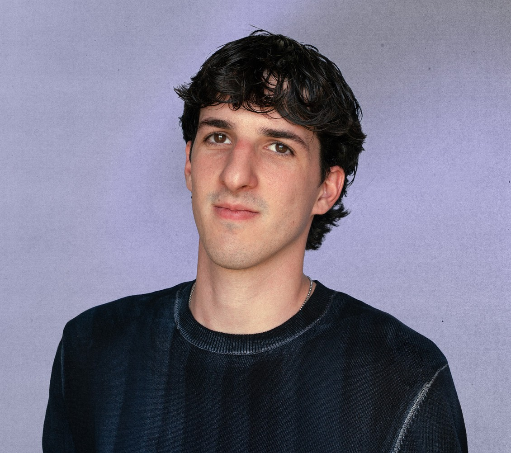

Creatività e attenzione ai dettagli sono i miei punti di forza. Sono positivo, collaborativo e capace di integrarmi in un team, contribuendo con idee e supporto in ogni fase del progetto.

Il mio lavoro si muove tra identità visiva, impaginazione editoriale, fotografia e motion design. Ogni progetto parte dal contenuto (un brano, un testo, un tema) e cerca la forma che lo renda chiaro e riconoscibile. Mi piace capire prima cosa c’è da raccontare, e solo dopo come raccontarlo.
Dal 2024 lavoro in Plural come Associate Junior Art Director, su campagne e progetti editoriali per clienti come ENGIE e Humana People to People. Dal 2021 collaboro con artisti della scena musicale, curando artwork, fotografia e immaginario visivo. Uso l’AI come strumento di produzione, sempre guidato da una direzione creativa precisa.
Esperienza
- Associate Junior Art Director
Plural
26.06.2024 - attualmente in corso - Visual Designer
Rude Records
8.05.2023 - 28.07.2023 - Visual Designer e Fotografo
Freelance
2021 - Attualmente in corso
Formazione
- ITS Strategic Visual Designer per la
Cultura e il Territorio
2022-2024 - Corso di Graphic Design, Job
Formazione
2021-2022 - Diploma di maturità, indirizzo
Grafico W. Kandinsky
2016-2021
Clienti
- ENGIE
- Humana People to People
- Pavesini
- Associazione Futuri Probabili
- Off Nova
- Peva
- Luca Vigentini
- Sofia Del Grande
- Lucky